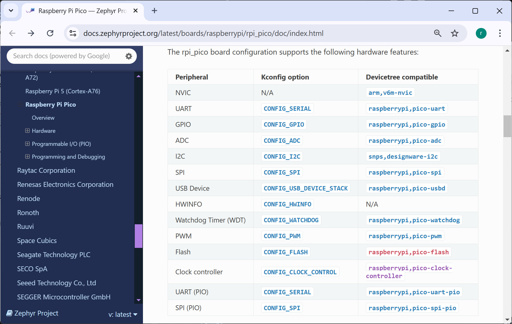
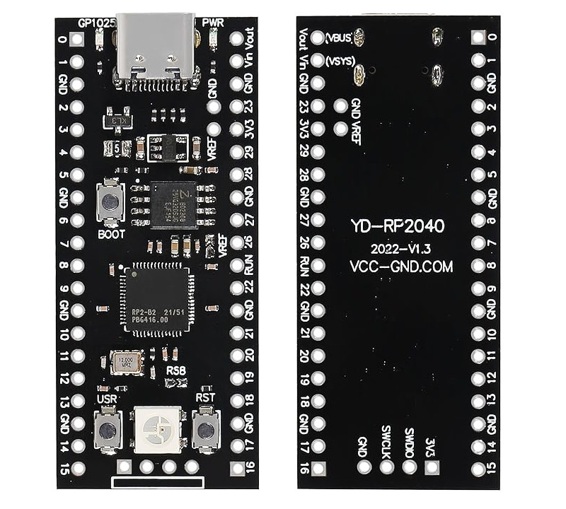
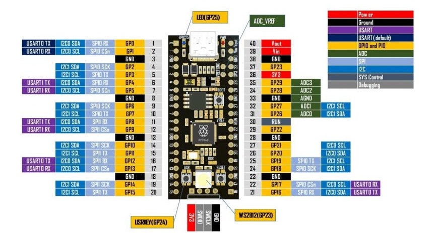
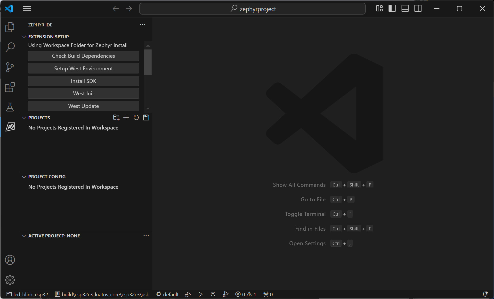
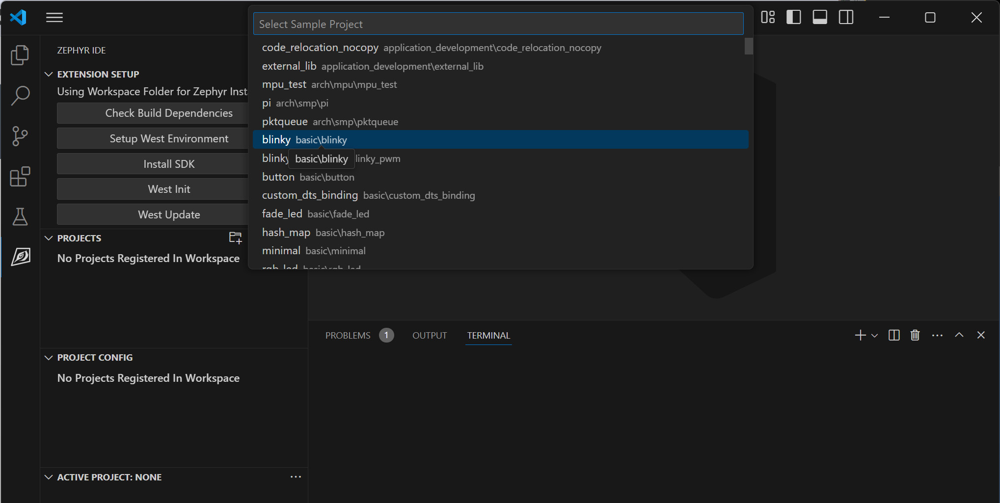
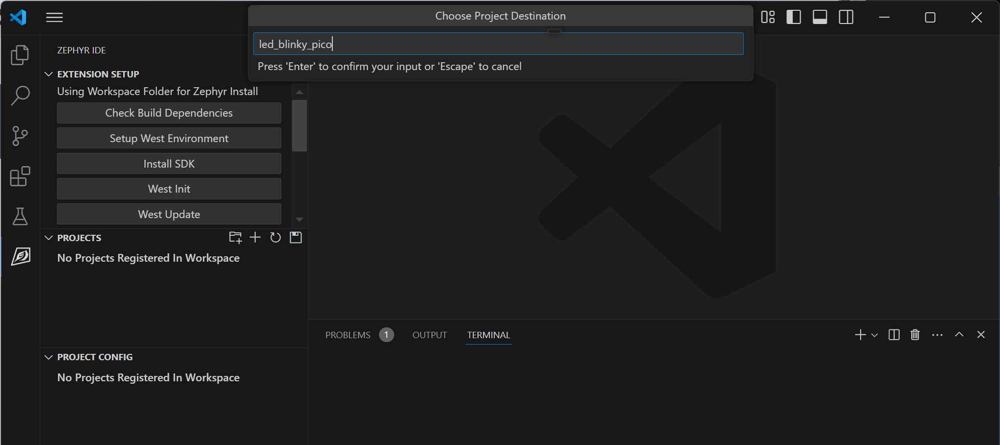
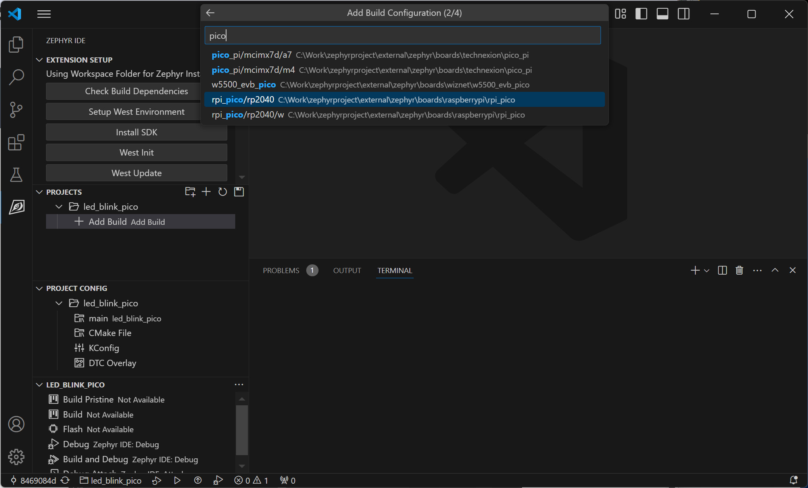
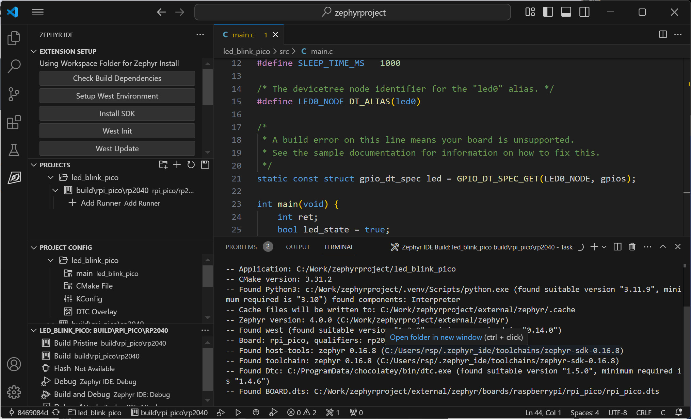
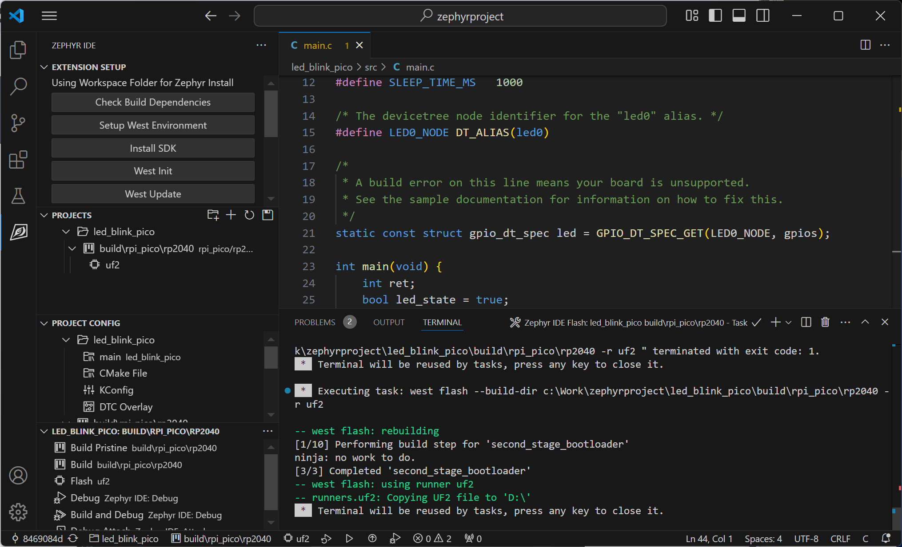
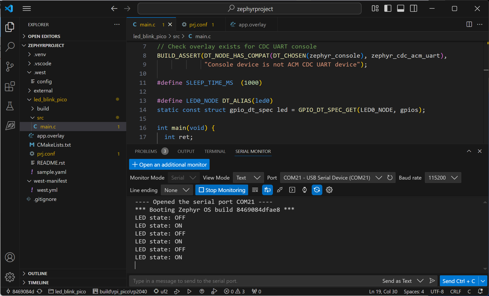

การใช้งาน Zephyr RTOS สำหรับ Raspberry Pi Pico (ตอนที่ 1)#
Keywords: Zephyr RTOS, Zephyr IDE, Extension Pack for VS Code IDE, Raspberry Pi Pico
▷ บอร์ด Raspberry Pico#
บอร์ดไมโครคอนโทรลเลอร์ของ Raspberry Pi มีหลายรุ่นในปัจจุบัน เช่น
- Raspberry Pi Pico (ใช้ชิป RP2040 SoC)
- Raspberry Pi Pico W (มีโมดูล CYW43439: WiFi / BLE)
- Raspberry Pi Pico 2 (ใช้ชิป RP2350 SoC)
- Raspberry Pi Pico 2 W (มีโมดูล CYW43439: WiFi / BLE)
ในขณะที่เขียนบทความนี้ Zephyr RTOS รองรับการใช้งานสำหรับบอร์ด Pico / Pico-W แต่ก็สามารถใช้กับบอร์ดไมโครคอนโทรลเลอร์ RP2040 ของบริษัทอื่นได้ เช่น Waveshare RP2040 Zero และ VCC-GND Studio YD_RP2040

รูป: รายการวงจรภายในของ RP2040 และการใช้งานได้กับ Zephyr RTOS

รูป: ตัวอย่างบอร์ด YD-RP2040 ที่ได้นำมาทดลองใช้งานแทน Pico ( Schematic .PDF | Schematic .JPG)
{kind=link}

รูป: YD-RP2040 Pinout
▷ การเริ่มต้นสร้างโปรเจกต์ใหม่#
เริ่มต้นให้สร้างโปรเจกต์ใหม่ใน Zephyr Workspace
โดยเลือกวิธีสร้างจากโปรเจกต์ตัวอย่าง เช่น led_blinky
ในตัวอย่างนี้ได้ตั้งชื่อ led_blink_pico สำหรับโปรเจกต์ใหม่
กดปุ่ม Ctrl+Shift+P แล้วเลือก "Zephyr IDE: Create Project From Template"
เพื่อสร้างโปรเจกต์ใหม่จากตัวอย่าง basic\led_blinkly และใช้ชื่อเป็น led_blink_pico

รูป: VS Code - Zephyr IDE ที่มีการติดตั้งซอฟต์แวร์และสร้าง Workspace ไว้แล้ว

รูป: การสร้างโปรเจกต์ใหม่ โดยเลือกจากตัวอย่างของ Zephyr SDK (เลือก basic\led_blinkly)
ทำขั้นตอน "Add Build" ในโปรเจกต์ โดยเลือกใช้บอร์ดไมโครคอนโทรลเลอร์ Raspberry Pi Pico (RP2040)

รูป: การตั้งชื่อโปรเจกต์ใหม่
เมื่อสร้าง Build และเลือกบอร์ดไมโครคอนโทรลเลอร์ แล้วจึงทำขั้นตอน Build เพื่อคอมไพล์โค้ดในโปรเจกต์

รูป: การเลือกบอร์ด rpi_pico/rp2040

รูป: การทำขั้นตอน Build
เลือกวิธีการอัปโหลดไฟล์เฟิร์มแวร์ โดยตั้งค่า Runner ให้เป็นuf2 สำหรับบอร์ด Pico
แล้วทำขั้นตอน Flash

รูป: การทำขั้นตอน Flash
เมื่อถึงขั้นตอนนี้ แสดงว่า เราสามารถใช้ Zephyr IDE และเขียนโค้ดสำหรับบอร์ด Pico ได้สำเร็จแล้ว
▷ การส่งข้อความผ่านทาง USB-CDC#
ตัวอย่างโค้ดถัดไปสาธิตการส่งข้อความผ่านทางพอร์ต USB
ที่เกิดจากการใช้คำสั่ง printk() โดยใช้ USB-CDC
File: main.c
#include <stdio.h>
#include <zephyr/drivers/gpio.h>
#include <zephyr/kernel.h>
#include <zephyr/usb/usb_device.h>
#include <zephyr/drivers/uart.h>
// Check if the overlay exists for CDC UART console
BUILD_ASSERT(DT_NODE_HAS_COMPAT(DT_CHOSEN(zephyr_console),
zephyr_cdc_acm_uart),
"Console device is not ACM CDC UART device");
#define SLEEP_TIME_MS (1000)
#define LED0_NODE DT_ALIAS(led0)
static const struct gpio_dt_spec led = GPIO_DT_SPEC_GET(LED0_NODE, gpios);
// Configure the console output (USB Serial).
const struct device *usb_dev = DEVICE_DT_GET(DT_NODELABEL(cdc_acm_uart0));
//const struct device *usb_dev = DEVICE_DT_GET(DT_CHOSEN(zephyr_console));
void main(void) {
// Check if USB can be initialized.
if (usb_enable(NULL) != 0) {
return;
}
// Wait for a console connection, if the DTR flag was set to activate USB.
uint32_t dtr = 0;
while (!dtr) {
uart_line_ctrl_get(usb_dev, UART_LINE_CTRL_DTR, &dtr);
k_sleep(K_MSEC(100));
}
if (!gpio_is_ready_dt(&led)) {
return;
}
if (gpio_pin_configure_dt(&led, GPIO_OUTPUT_ACTIVE) != 0) {
return;
}
bool led_state = true;
while (1) {
led_state = !led_state;
(void)gpio_pin_set_dt(&led, led_state);
printf("LED state: %s\n", led_state ? "ON" : "OFF");
k_msleep(SLEEP_TIME_MS);
}
}
การเปิดใช้งานวงจร USB-CDC (Communications Device Class) บนชิป RP2040
เพื่อใช้งาน UART-Serial / Console โดยใช้ Zephyr Device Driver ชื่อว่า zephyr,cdc-acm-uart และกำหนดให้รองรับการใช้งาน zephyr,console สำหรับคำสั่ง printk()
สามารถทำได้โดยการแก้ไขไฟล์ proj.conf และ app.overlay ตามตัวอย่างด้านล่างนี้
File: proj.conf
CONFIG_GPIO=y
CONFIG_SERIAL=y
CONFIG_CONSOLE=y
CONFIG_UART_CONSOLE=y
CONFIG_UART_LINE_CTRL=y
CONFIG_USB_DEVICE_STACK=y
CONFIG_USB_DEVICE_PRODUCT="RPi Pico USB Serial Console"
CONFIG_USB_DEVICE_VID=0x2e8a
CONFIG_USB_DEVICE_PID=0x000a
CONFIG_USB_CDC_ACM=y
CONFIG_UART_CONSOLE=y
File: app.overlay
/ {
chosen {
zephyr,console = &cdc_acm_uart0;
};
aliases {
led0 = &led0;
sw0 = &button0;
};
buttons {
compatible = "gpio-keys";
button0: button_0 {
gpios = <&gpio0 24 (GPIO_ACTIVE_LOW | GPIO_PULL_UP)>;
label = "User button";
};
};
leds {
compatible = "gpio-leds";
led0: led_0 {
gpios = <&gpio0 25 GPIO_ACTIVE_HIGH>;
label = "LED 0";
};
};
};
&zephyr_udc0 {
cdc_acm_uart0: cdc_acm_uart0 {
compatible = "zephyr,cdc-acm-uart";
label = "CDC_ACM_0";
};
};

รูป: ตัวอย่างการรับข้อความจากบอร์ด RP2040 ผ่านทาง USB-CDC
▷ การอ่านค่าจากปุ่มกดและใช้เป็นค่าเอาต์พุตสำหรับ LED#
ตัวอย่างโค้ดนี้สาธิตการอ่านค่าจากปุ่มกดด้วยวิธีวนซ้ำ (Polling Loop) โดยเลือกใช้ขา GPIO-24 ซึ่งทำงานแบบ Active-low ค่าอินพุตที่อ่านได้ในแต่ละครั้ง จะถูกนำไปใช้กำหนดสถานะของ LED ซึ่งตรงกับขา GPIO-25 (Active-High)
#include <stdio.h>
#include <zephyr/drivers/gpio.h>
#include <zephyr/kernel.h>
#include <zephyr/usb/usb_device.h>
#include <zephyr/drivers/uart.h>
// Check if the overlay exists for CDC UART console
BUILD_ASSERT(DT_NODE_HAS_COMPAT(DT_CHOSEN(zephyr_console),
zephyr_cdc_acm_uart),
"Console device is not ACM CDC UART device");
#define LED0_NODE DT_ALIAS(led0)
static const struct gpio_dt_spec led = GPIO_DT_SPEC_GET(LED0_NODE, gpios);
#define SW_NODE DT_ALIAS(sw0)
static const struct gpio_dt_spec sw = GPIO_DT_SPEC_GET(SW_NODE, gpios);
// Configure the console output (USB Serial).
const struct device *usb_dev = DEVICE_DT_GET(DT_NODELABEL(cdc_acm_uart0));
//const struct device *usb_dev = DEVICE_DT_GET(DT_CHOSEN(zephyr_console));
void main(void) {
// Check if USB can be initialized.
if (usb_enable(NULL) != 0) {
return;
}
// Wait for a console connection, if the DTR flag was set to activate USB.
uint32_t dtr = 0;
while (!dtr) {
uart_line_ctrl_get(usb_dev, UART_LINE_CTRL_DTR, &dtr);
k_sleep(K_MSEC(100));
}
if (!gpio_is_ready_dt(&led)) {
return;
}
if (gpio_pin_configure_dt(&led, GPIO_OUTPUT_ACTIVE) != 0) {
return;
}
if (!gpio_is_ready_dt(&sw)) {
printk("GPIO device is not ready: %s\n", sw.port->name);
return;
}
if (gpio_pin_configure_dt(&sw, GPIO_INPUT) != 0) {
printk("GPIO device config failed: %s\n", sw.port->name);
return;
}
(void)gpio_pin_set_dt(&led, 0); // Turn off the LED
k_msleep(10);
while (1) {
int value = gpio_pin_get_dt(&sw); // Read button input
if (value >= 0) {
(void)gpio_pin_set_dt(&led, value); // Update LED state
printf("LED state: %s\n", value ? "ON" : "OFF");
}
k_msleep(100);
}
}
▷ กล่าวสรุป#
บทความนี้ได้นำเสนอขั้นตอนการสร้างโปรเจกต์ใหม่ใน VS Code IDE + Zephyr IDE Extension (ทดลองกับระบบปฏิบัติการ Windows 11) ได้ทดลองเขียนโค้ดร่วมกับ Zephyr RTOS ในเบื้องต้น และมีตัวอย่างโค้ดที่สามารถนำไปทดลองใช้กับบอร์ดไมโครคอนโทรลเลอร์ RP2040
This work is licensed under a Creative Commons Attribution-ShareAlike 4.0 International License.
Created: 2024-12-14 | Last Updated: 2024-12-15